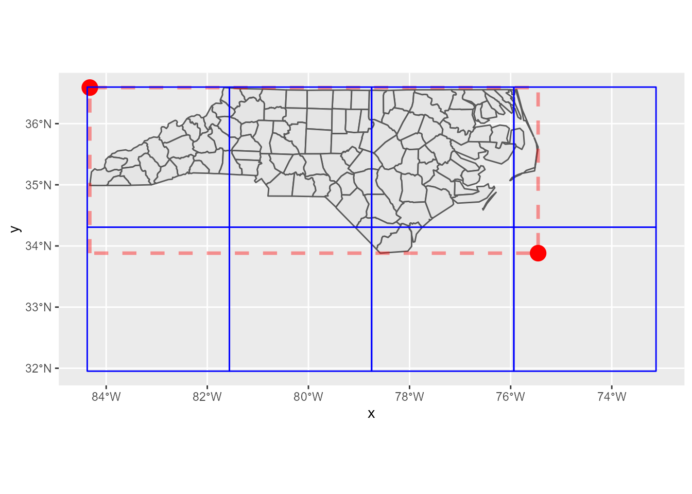
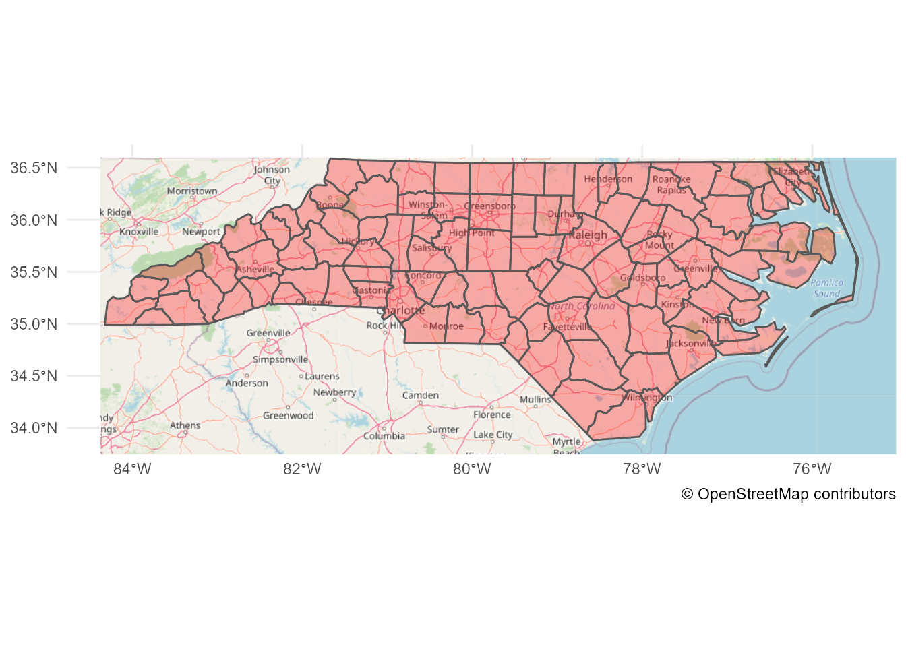
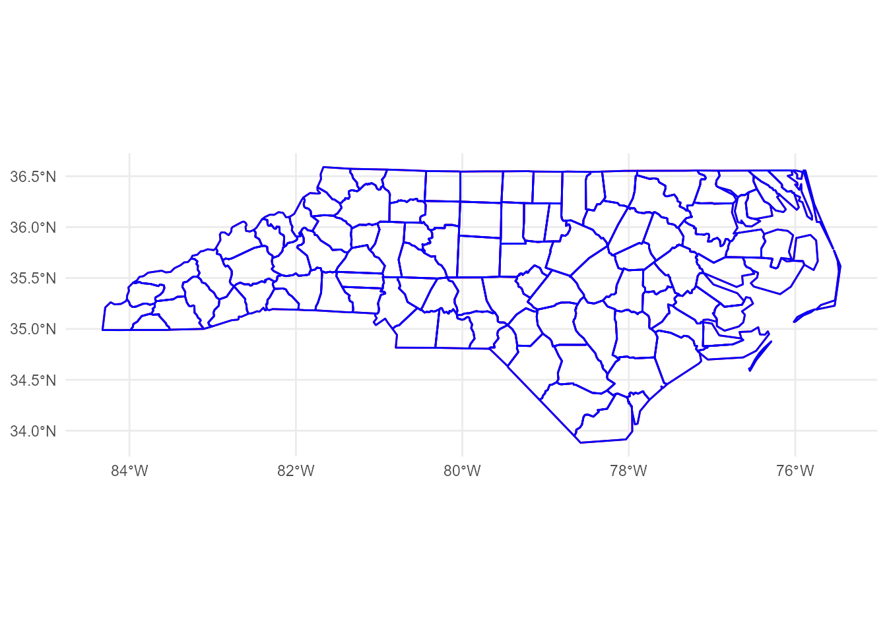

nc <- sf::read_sf(system.file("shape/nc.shp", package="sf"))
# mapview::mapview(nc)mapview is a very nice package to explore an sf object. It can overlay sf object on the map images:
But, how can I do this with ggplot2? (My friend told me mapview::mapshot() can generate a PNG, but I want to do this with ggplot2!)
RTFM
Before anything, I need to read Tile Usage Policy to use the OpenStreetMap tiles. For “Requirements” section, this is important:
Clearly display license attribution.
According to Copyright and License, it’s so simple as just adding this caption to my plots:
labs(caption = "\U00a9 OpenStreetMap contributors")For “Technical Usage Requirements” section, I have to read this more carefully. Let’s look at the requirements one by one.
Valid HTTP User-Agent identifying application. Faking another app’s User-Agent WILL get you blocked.
Oh, it seems I need to add User-Agent header. OK, let’s invent some nice name… If I use httr::GET(), the code will probably like this:
GET(
"https://...",
add_headers(`User-Agent` = "Yutani's blog post")
)If known, a valid HTTP Referer.
I don’t have Referers, so I skip this.
DO NOT send no-cache headers. (“Cache-Control: no-cache”, “Pragma: no-cache” etc.)
I do nothing other than swearing I’ll never use this header.
Cache Tile downloads locally according to HTTP Expiry Header, alternatively a minimum of 7 days.
Ah, this is important. Let’s implement later.
Maximum of 2 download threads. (Unmodified web browsers’ download thread limits are acceptable.)
Fortunately, I’m not good at parallelism, so this is fine.
Get Tile URLs
According to Slippy map tilenames, the URL of a tile follows this format:
https://[abc].tile.openstreetmap.org/zoom/x/y.png I have to fill these four parts:
[abc]zoomxy
Let’s look at these one by one.
[abc]
[abc] means there are three domains; a.tile.openstreetmap.org, b.tile.openstreetmap.org, c.tile.openstreetmap.org. But, why? It says:
Browser-based applications can thus request multiple tiles from multiple subdomains faster than from one subdomain.
So, as I’m not browser-based, I can choose arbitrary one.
zoom
Zoom parameter is an integer number from 0 to 19. If zoom is 0, there’s only one tile. Likewise 2 x 2 tiles for zoom 1, 4 x 4 tiles for zoom 2, and so on. Then, which one should I choose? This can be roughly determined based on the size of the bbox (boundary box) of the sf object.
# get the bbox
b <- sf::st_bbox(nc)
b xmin ymin xmax ymax
-84.32385 33.88199 -75.45698 36.58965 # calculate the lengths of x and y of the bbox
x_len <- b["xmax"] - b["xmin"]
y_len <- b["ymax"] - b["ymin"]
# calculate the minimum zoom level that is smaller than the lengths
x_zoom <- sum(x_len < 360 / 2^(0:19)) - 1
y_zoom <- sum(y_len < 170.1022 / 2^(0:19)) - 1
zoom <- min(x_zoom, y_zoom)
zoom[1] 5But, since the tile is so small as 256 × 256 pixel, it’s often better to zoom more.
zoom <- zoom + 2(I’m not sure how to do this correctly, I guess the zoom level should be determined by the size of the plot canvas, not the bbox.)
x and y
A pair of x and y represents the location of a tile. x corresponds to longitude, y to latitude. If the zoom is given, I can convert longitudes and latitudes to x and y according to the pseudo code on OpenStreetMap’s wiki:
sec <- function(x) {
1 / cos(x)
}
lonlat2xy <- function(lat_deg, lon_deg, zoom) {
n <- 2^zoom
x <- (n * (lat_deg + 180)) %/% 360
lon_rad <- lon_deg * pi / 180
y <- (n * (1 - log(tan(lon_rad) + sec(lon_rad)) / pi)) %/% 2
list(x = x, y = y)
}But, how can I find the set of tiles which covers the whole bbox?
library(ggplot2)
p <- ggplot(nc) +
geom_sf() +
annotate("rect", xmin = b["xmin"], xmax = b["xmax"], ymin = b["ymin"], ymax = b["ymax"],
colour = alpha("red", 0.4), fill = "transparent", linetype = "dashed", size = 1.2)size aesthetic has been deprecated for use with lines as of ggplot2 3.4.0
ℹ Please use linewidth aesthetic instead
This message is displayed once every 8 hours.p
This problem can be simplified; I can focus only two corners, the north-west and the south-east. If I calculate which tiles of x and y those two points fall in, I can find the rest of the tiles by filling the sequences of x and y between these two tiles.
corners <- expand.grid(x = b[c(1, 3)], y = b[c(2, 4)])
p +
geom_point(aes(x, y), corners[2:3,], colour = "red", size = 5)
Here’s the tiles:
xy <- lonlat2xy(b[c("xmin", "xmax")], b[c("ymin", "ymax")], zoom)
tiles <- expand.grid(x = seq(xy$x["xmin"], xy$x["xmax"]),
y = seq(xy$y["ymin"], xy$y["ymax"]))
tiles x y
1 34 51
2 35 51
3 36 51
4 37 51
5 34 50
6 35 50
7 36 50
8 37 50Tile URLs
From the results above, I can yield the URLs of the tiles:
urls <- sprintf("https://a.tile.openstreetmap.org/%d/%d/%d.png", zoom, tiles$x, tiles$y)
urls[1] "https://a.tile.openstreetmap.org/7/34/51.png"
[2] "https://a.tile.openstreetmap.org/7/35/51.png"
[3] "https://a.tile.openstreetmap.org/7/36/51.png"
[4] "https://a.tile.openstreetmap.org/7/37/51.png"
[5] "https://a.tile.openstreetmap.org/7/34/50.png"
[6] "https://a.tile.openstreetmap.org/7/35/50.png"
[7] "https://a.tile.openstreetmap.org/7/36/50.png"
[8] "https://a.tile.openstreetmap.org/7/37/50.png"OK, now I can download them. But, before that, let’s confirm that the tiles really cover the expected area.
Tile positions
To plot these tiles, I calculate the north-west corner of a tile by the following code (the pseudo code for this is also found on the wiki):
xy2lonlat <- function(x, y, zoom) {
n <- 2^zoom
lon_deg <- x / n * 360.0 - 180.0
lat_rad <- atan(sinh(pi * (1 - 2 * y / n)))
lat_deg <- lat_rad * 180.0 / pi
list(lon_deg = lon_deg, lat_deg = lat_deg)
}Then, south-east corners can be also calculated easily. Let’s calculate the both corners and bind them to a data.frame.
library(purrr)
library(dplyr, warn.conflicts = FALSE)
nw_corners <- pmap_dfr(tiles, xy2lonlat, zoom = zoom)
# add 1 to x and y to get the south-east corners
se_corners <- pmap_dfr(mutate_all(tiles, `+`, 1), xy2lonlat, zoom = zoom)
names(nw_corners) <- c("xmin", "ymax")
names(se_corners) <- c("xmax", "ymin")
tile_positions <- bind_cols(nw_corners, se_corners)
tile_positions# A tibble: 8 × 4
xmin ymax xmax ymin
<dbl> <dbl> <dbl> <dbl>
1 -84.4 34.3 -81.6 32.0
2 -81.6 34.3 -78.8 32.0
3 -78.8 34.3 -75.9 32.0
4 -75.9 34.3 -73.1 32.0
5 -84.4 36.6 -81.6 34.3
6 -81.6 36.6 -78.8 34.3
7 -78.8 36.6 -75.9 34.3
8 -75.9 36.6 -73.1 34.3Now I can plot the empty tiles as below:
p +
geom_point(aes(x, y), corners[2:3,], colour = "red", size = 5) +
geom_rect(data = tile_positions,
aes(xmin = xmin, xmax = xmax, ymin = ymin, ymax = ymax),
colour = "blue", fill = "transparent")
Yay, confirmed! Let’s proceed to the next step.
Get tile data
If I just get the response from a URL, httr::GET() is handy. But, this time, for the requirement of caching, I have to save the responses to disk first. So, I use curl::curl_download() here.
Note that PNG data can be read into R session by png::readPNG().
get_tile <- function(url) {
# build a local path
path <- stringr::str_extract(url, "/\\d+/\\d+/\\d+.png")
local_png <- here::here(file.path("data", "osm-tiles", path))
if (!file.exists(local_png)) {
dir.create(dirname(local_png), showWarnings = FALSE, recursive = TRUE)
# add header
h <- curl::new_handle()
curl::handle_setheaders(h, `User-Agent` = "Yutani's blog post")
curl::curl_download(url, destfile = local_png)
}
png::readPNG(local_png)
}Then, let’s get all tiles.
pngs <- map(urls, get_tile)Plot tiles
To plot tiles, I use annotation_raster(), whose necessary arguments are:
rasterxminxmaxyminymax
The first one is pngs and the others are contained in tile_positions. So, let’s combine them so that I can use pmap().
args <- tile_positions %>%
mutate(raster = pngs)
args# A tibble: 8 × 5
xmin ymax xmax ymin raster
<dbl> <dbl> <dbl> <dbl> <list>
1 -84.4 34.3 -81.6 32.0 <dbl [256 × 256 × 3]>
2 -81.6 34.3 -78.8 32.0 <dbl [256 × 256 × 3]>
3 -78.8 34.3 -75.9 32.0 <dbl [256 × 256 × 3]>
4 -75.9 34.3 -73.1 32.0 <dbl [256 × 256 × 3]>
5 -84.4 36.6 -81.6 34.3 <dbl [256 × 256 × 3]>
6 -81.6 36.6 -78.8 34.3 <dbl [256 × 256 × 3]>
7 -78.8 36.6 -75.9 34.3 <dbl [256 × 256 × 3]>
8 -75.9 36.6 -73.1 34.3 <dbl [256 × 256 × 3]>Now I can plot tiles at last.
ggplot(nc) +
pmap(args, annotation_raster, interpolate = TRUE) +
geom_sf(fill = alpha("red", 0.3)) +
# don't forget the license notice!
labs(caption = "\U00a9 OpenStreetMap contributors") +
theme_minimal()
Done!
But, I didn’t expect the code would be this long… Maybe I need to create a package for this.
Caveats
Note that, I didn’t care about the CRS because nc’s CRS is fortunately EPSG 3857, which OpenStreetMap uses. If the sf object I want to plot has the different CRS, there may be a bit more to consider (and I don’t understand the CRS well…).
Update:
Sorry, I was wrong… nc’s CRS is EPSG 4267 and OpenStreetMap tiles use EPSG 4326. Thanks Edzer for pointing this out!
sf::st_crs(nc)Coordinate Reference System:
User input: NAD27
wkt:
GEOGCRS["NAD27",
DATUM["North American Datum 1927",
ELLIPSOID["Clarke 1866",6378206.4,294.978698213898,
LENGTHUNIT["metre",1]]],
PRIMEM["Greenwich",0,
ANGLEUNIT["degree",0.0174532925199433]],
CS[ellipsoidal,2],
AXIS["latitude",north,
ORDER[1],
ANGLEUNIT["degree",0.0174532925199433]],
AXIS["longitude",east,
ORDER[2],
ANGLEUNIT["degree",0.0174532925199433]],
ID["EPSG",4267]]So, I should have converted nc to the CRS first.
nc_4326 <- sf::st_transform(nc, 4326)Fortunately, the difference between EPSG 4267 and EPSG 4326 is rather negligible for this scale, so the result map should look almost same if I used nc_4326 instead of nc. Here’s the difference (can you see there’s a little red colors?):
nc_4326_not_transformed <- sf::`st_crs<-`(nc, 4326)Warning: st_crs<- : replacing crs does not reproject data; use st_transform for
thatggplot() +
geom_sf(data = nc_4326_not_transformed, fill = "transparent", colour = "red") +
geom_sf(data = nc_4326, fill = "transparent", colour = "blue") +
theme_minimal()